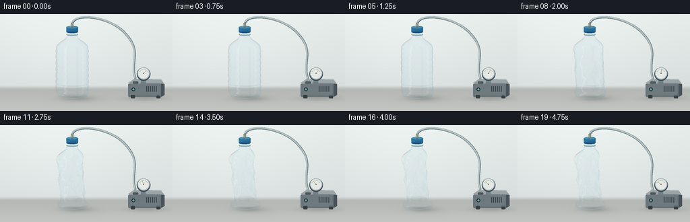
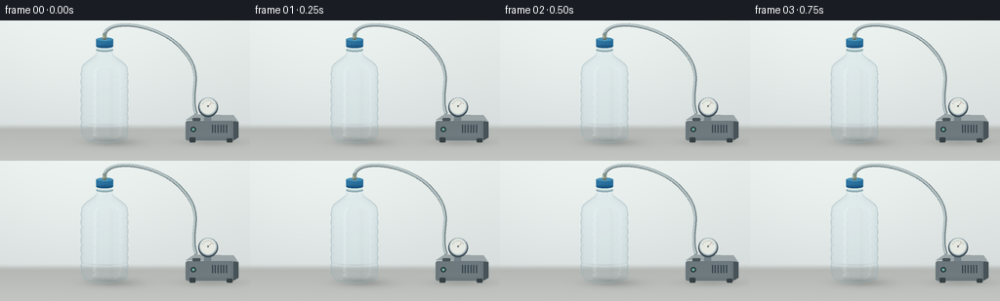

CODING AGENTS AS PIXEL WORLD MODELS
traex/GPT-6.1-Sol · mechanics_0023
点击播放 · 原生 RGB 像素
逐轮保存的候选
回放视频、检查图与代码变化。
每份候选均可单独播放。实际图片检查记录在下方工具轨迹中。
候选 01播放与检查图
点击播放 · 原生 RGB 像素


展开代码变化
--- 上一保存版本
+++ 本次保存版本
@@ -0,0 +1,266 @@
+"""Procedural clear PET bottle timelapse, using only NumPy/Pillow geometry."""
+from pathlib import Path
+import json
+import numpy as np
+from PIL import Image, ImageDraw, ImageFilter
+import artifact_io
+
+ROOT = Path(__file__).resolve().parent
+SPEC = json.loads((ROOT/'task_spec.json').read_text())
+S = 3
+W,H = SPEC['width']*S,SPEC['height']*S
+SCALE=52*S
+CX=107*S
+BASE=125*S
+# Orthographic view, slightly above the tabletop.
+ELEV=np.deg2rad(8)
+V=np.array([0,-np.cos(ELEV),np.sin(ELEV)])
+UP=np.array([0,np.sin(ELEV),np.cos(ELEV)])
+
+
+def smooth(a,b,x):
+ q=np.clip((x-a)/(b-a),0,1)
+ return q*q*(3-2*q)
+
+
+def background(progress):
+ yy,xx=np.mgrid[:H,:W].astype(float)
+ y=yy/S; x=xx/S
+ wall=np.array([209.,216.,216.])[None,None,:]+(1-y[...,None]/144)*np.array([20,20,17])
+ broad=np.exp(-((x-85)/116)**2-((y-39)/95)**2)
+ wall+=broad[...,None]*8
+ table=np.zeros_like(wall)+np.array([180,183,179])
+ table+=(y[...,None]-110)*.43
+ blend=smooth(105,113,y)[...,None]
+ arr=wall*(1-blend)+table*blend
+ # Barely perceptible bench texture, temporally stable.
+ rng=np.random.default_rng(244)
+ arr+=rng.normal(0,.22,(H,W,1))
+ # Soft cast shadows, with bottle shadow contracting as it buckles.
+ for sx,sy,rx,ry,opacity in [(113,125,23-5*progress,3.8,28),(122,126,31,6.0,8),(216,125,29,4,25)]:
+ shadow=np.exp(-((x-sx)/rx)**2-((y-sy)/ry)**2)
+ arr-=shadow[...,None]*opacity
+ im=Image.fromarray(np.clip(arr,0,255).astype(np.uint8))
+ d=ImageDraw.Draw(im)
+ def line(points,col,w=1): d.line([(int(a*S),int(b*S)) for a,b in points],fill=col,width=max(1,int(w*S)),joint='curve')
+ def box(bounds,col,r=0): d.rounded_rectangle(tuple(int(i*S) for i in bounds),radius=int(r*S),fill=col)
+ def ell(bounds,col,outline=None,w=1):d.ellipse(tuple(int(i*S) for i in bounds),fill=col,outline=outline,width=max(1,int(w*S)))
+ # Vacuum line: a hose passing through a sealed cap, not an open bottle mouth.
+ t=np.linspace(0,1,150)
+ # Cubic Bezier tube sweeping to a small benchtop suction unit.
+ P=np.array([[107,16],[108,-4],[165,3],[187,30]],float)
+ curve=(1-t[:,None])**3*P[0]+3*(1-t[:,None])**2*t[:,None]*P[1]+3*(1-t[:,None])*t[:,None]**2*P[2]+t[:,None]**3*P[3]
+ P2=np.array([[187,30],[211,56],[192,72],[201,96]],float)
+ curve2=(1-t[:,None])**3*P2[0]+3*(1-t[:,None])**2*t[:,None]*P2[1]+3*(1-t[:,None])*t[:,None]**2*P2[2]+t[:,None]**3*P2[3]
+ pts=np.concatenate([curve,curve2])
+ line(pts,(107,122,126),3.4)
+ line(pts+np.array([-.35,-.35]),(170,185,187),2.4)
+ line(pts+np.array([-.65,-.65]),(220,230,230),.55)
+ # Pump housing, in perspective, deliberately secondary to the bottle.
+ d.polygon([(190*S,102*S),(199*S,96*S),(239*S,97*S),(244*S,104*S)],fill=(155,165,167))
+ box((190,103,239,123),(105,117,122),2)
+ d.polygon([(239*S,103*S),(244*S,104*S),(244*S,120*S),(239*S,123*S)],fill=(72,83,89))
+ for j in range(12):
+ line([(194,104+j*1.35),(236,104+j*1.35)],(112+j//3,124+j//3,128+j//3),.7)
+ box((194,120,200,125),(54,63,67),1)
+ box((232,121,238,125),(54,63,67),1)
+ box((197,100,205,103),(73,84,89),1)
+ for k in range(6):
+ box((217+k*2.9,107,218+k*2.9,115),(57,70,78),.3)
+ # Metallic vacuum gauge, with its needle gradually indicating suction.
+ box((209,94,216,103),(116,129,135),1)
+ ell((203,79,223,99),(64,78,88))
+ ell((204,79,222,97),(174,188,194))
+ ell((205.3,80.3,220.7,95.7),(229,233,225))
+ for a in np.linspace(np.pi*.15,np.pi*.86,8):
+ ax=213+6.4*np.cos(a); ay=88-6.4*np.sin(a)
+ bx=213+5.4*np.cos(a); by=88-5.4*np.sin(a)
+ line([(ax,ay),(bx,by)],(89,102,108),.4)
+ a=.25*np.pi+.55*np.pi*progress
+ line([(213,88),(213+5.6*np.cos(a),88-5.6*np.sin(a))],(143,66,55),.65)
+ ell((212.1,87.1,213.9,88.9),(91,103,110))
+ ell((195.2,109,200.8,114.6),(39,55,61))
+ ell((196.6,110.4,199.4,113.2),(108,169,154))
+ return np.asarray(im).astype(float)
+
+NZ,NT=170,192
+z0=np.linspace(.025,1.91,NZ)
+th=np.linspace(0,2*np.pi,NT,endpoint=False)
+ZZ,TT=np.meshgrid(z0,th,indexing='ij')
+# continuous profile: five-foot bottom, cylindrical body, rounded shoulder, neck
+profile_z=np.array([.025,.05,.11,.17,.25,1.43,1.49,1.55,1.61,1.67,1.73,1.78,1.91])
+profile_r=np.array([.30,.39,.435,.46,.465,.465,.451,.415,.346,.262,.181,.157,.157])
+# Triangle topology wraps around without any seam.
+i=np.arange(NZ-1)[:,None]*NT+np.arange(NT)[None,:]
+j=np.arange(NZ-1)[:,None]*NT+(np.arange(NT)[None,:]+1)%NT
+TRI=np.concatenate([np.stack([i,j,i+NT],-1).reshape(-1,3),np.stack([j,j+NT,i+NT],-1).reshape(-1,3)])
+
+
+def geometry(p):
+ R=np.interp(ZZ,profile_z,profile_r)
+ body=smooth(.13,.25,ZZ)*(1-smooth(1.42,1.74,ZZ))
+ foot=np.exp(-((ZZ-.085)/.075)**2)
+ R=R*(1+.075*foot*np.cos(TT*5))
+ # Molded horizontal reinforcement rings, which visibly bend during collapse.
+ for h in [.24,.40,.57,.75,.93,1.11,1.29,1.43]:
+ bend=p*.037*np.sin(3*TT+2*h)+p*.025*np.sin(5*TT-h)
+ band=np.exp(-((ZZ-h-bend)/.019)**2)
+ R-=.013*band
+ # Several independent pressure buckles form, not a simple rigid scaling.
+ activation=smooth(.04,.95,p)
+ radial=np.ones_like(R)
+ for height,az,amp,width in [(.96,-1.1,.52,.35),(.52,2.8,.48,.24),(1.28,.4,.34,.25),(.73,4.2,.32,.30)]:
+ angular=np.exp(3.2*(np.cos(TT-az)-1))
+ dent=np.exp(-((ZZ-height)/width)**2)
+ radial-=activation*amp*angular*dent
+ # Narrow, progressively sharpening crease ridges around the caved walls.
+ phase=4*TT+11*ZZ+1.1*np.sin(3*ZZ)
+ crease=np.sin(phase)+.34*np.sin(9*TT-14*ZZ)
+ R*=radial*(1+activation*.075*body*crease)
+ X=R*np.cos(TT)*(1-.22*activation*body)
+ Y=R*np.sin(TT)*(1-.48*activation*body)
+ X+=activation*body*(.038*np.sin(7*ZZ)-.035)
+ Y+=activation*body*.047*np.sin(8*ZZ)
+ # Neck and base remain stationary while the thin wall wrinkles inwards.
+ Z=ZZ+activation*.014*body*np.sin(phase)
+ verts=np.stack([X,Y,Z],-1)
+ dt=np.roll(verts,-1,axis=1)-np.roll(verts,1,axis=1)
+ dz=np.gradient(verts,axis=0)
+ normals=np.cross(dt,dz)
+ normals/=np.maximum(np.linalg.norm(normals,axis=-1,keepdims=True),1e-9)
+ return verts.reshape(-1,3),normals.reshape(-1,3)
+
+
+def raster(verts,normals):
+ # A small native NumPy triangle rasterizer; no renderer or learned models.
+ screen=np.stack([CX+SCALE*verts[:,0],BASE-SCALE*(verts@UP)],-1)
+ depth=verts@V
+ P=screen[TRI]
+ a,b,c=P[:,0],P[:,1],P[:,2]
+ den=(b[:,1]-c[:,1])*(a[:,0]-c[:,0])+(c[:,0]-b[:,0])*(a[:,1]-c[:,1])
+ lo=np.floor(P.min(axis=1)).astype(int)
+ hi=np.ceil(P.max(axis=1)).astype(int)
+ usable=(abs(den)>1e-7)&(lo[:,0]>=0)&(hi[:,0]<W)&(lo[:,1]>=0)&(hi[:,1]<H)
+ ids=np.flatnonzero(usable)
+ a,b,c,den,lo,hi=a[ids],b[ids],c[ids],den[ids],lo[ids],hi[ids]
+ # Thin triangles fit in a compact grid; batching limits temporary memory.
+ front=np.full(H*W,-np.inf)
+ back=np.full(H*W,np.inf)
+ fn=np.zeros((H*W,3)); bn=np.zeros((H*W,3))
+ for st in range(0,len(ids),3500):
+ sl=slice(st,st+3500)
+ aa,bb,cc=a[sl],b[sl],c[sl]
+ ll,hh=lo[sl],hi[sl]
+ mw=int(np.max(hh[:,0]-ll[:,0])+1); mh=int(np.max(hh[:,1]-ll[:,1])+1)
+ oy,ox=np.mgrid[:mh,:mw]; ox=ox.ravel(); oy=oy.ravel()
+ x=ll[:,0,None]+ox[None,:]+.5
+ y=ll[:,1,None]+oy[None,:]+.5
+ w0=((bb[:,1,None]-cc[:,1,None])*(x-cc[:,0,None])+(cc[:,0,None]-bb[:,0,None])*(y-cc[:,1,None]))/den[sl,None]
+ w1=((cc[:,1,None]-aa[:,1,None])*(x-cc[:,0,None])+(aa[:,0,None]-cc[:,0,None])*(y-cc[:,1,None]))/den[sl,None]
+ w2=1-w0-w1
+ inside=(w0>=-1e-5)&(w1>=-1e-5)&(w2>=-1e-5)&(x<=hh[:,0,None]+.5)&(y<=hh[:,1,None]+.5)
+ row,col=np.where(inside)
+ if not len(row):continue
+ tid=ids[st+row]
+ weights=np.stack([w0[row,col],w1[row,col],w2[row,col]],-1)
+ zz=np.sum(depth[TRI[tid]]*weights,axis=1)
+ nn=np.sum(normals[TRI[tid]]*weights[...,None],axis=1)
+ nn/=np.maximum(np.linalg.norm(nn,axis=1,keepdims=True),1e-9)
+ pix=(ll[row,1]+oy[col])*W+ll[row,0]+ox[col]
+ # Sort before scatter so repeated pixels pick their extreme depth.
+ order=np.lexsort((zz,pix)); op=pix[order]
+ last=np.r_[op[1:]!=op[:-1],True]; first=np.r_[True,op[1:]!=op[:-1]]
+ ix=order[last]; keep=zz[ix]>front[pix[ix]]; ix=ix[keep]
+ front[pix[ix]]=zz[ix];fn[pix[ix]]=nn[ix]
+ ix=order[first]; keep=zz[ix]<back[pix[ix]];ix=ix[keep]
+ back[pix[ix]]=zz[ix];bn[pix[ix]]=nn[ix]
+ return front.reshape(H,W),back.reshape(H,W),fn.reshape(H,W,3),bn.reshape(H,W,3)
+
+
+def plastic(bg,front,back,fn,bn,p):
+ mask=np.isfinite(front)
+ y,x=np.where(mask)
+ n=fn[mask]; nb=bn[mask]
+ nv=np.clip(n@V,0,1)
+ thickness=np.maximum(0,front[mask]-back[mask])
+ # Transparent shell: mild refraction, no opaque or liquid-filled core.
+ dx=(n[:,0]*3.6+nb[:,0]*1.0)*S
+ dy=(-n@UP)*2.5*S
+ sx=np.clip(np.rint(x+dx).astype(int),0,W-1)
+ sy=np.clip(np.rint(y+dy).astype(int),0,H-1)
+ transmitted=bg[sy,sx].copy()
+ transmitted=transmitted*np.array([.978,.989,.996])+np.array([0,1,2])
+ # Environment reflected in the curved bottle wall, broad vertical softboxes.
+ refl=2*nv[:,None]*n-V
+ az=np.arctan2(refl[:,0],-refl[:,1])
+ el=np.arcsin(np.clip(refl[:,2],-1,1))
+ left=np.exp(-((az+.88)/.18)**4)*np.exp(-((el-.20)/1.35)**6)
+ small=np.exp(-((az+.59)/.025)**2)*np.exp(-((el-.15)/1.3)**6)
+ right=np.exp(-((az-1.5)/.18)**4)*np.exp(-((el-.25)/1.4)**6)
+ dark=np.exp(-((az-.65)/.18)**4)
+ env=np.zeros((len(n),3))+np.array([160,179,185])
+ env+=left[:,None]*np.array([91,75,66])+small[:,None]*24
+ env+=right[:,None]*np.array([65,69,68])
+ env-=dark[:,None]*np.array([104,106,106])
+ fres=.035+.965*(1-nv)**4.5
+ # PET catches a tiny brighter softbox highlight even on face-on parts.
+ shiny=(left*.13+small*.19+right*.07)[:,None]
+ alpha=np.clip(fres[:,None]*.81+shiny,0,.95)
+ out=transmitted*(1-alpha)+np.clip(env,0,255)*alpha
+ # Back wall ribs: subtle second reflected layer visible through empty body.
+ bnv=np.clip(-(nb@V),0,1)
+ backring=(1-bnv)**3
+ out=out*(1-backring[:,None]*.08)+np.array([129,156,163])*backring[:,None]*.08
+ # Thin wall at contour has a double, cool edge.
+ edge=np.clip((.20-nv)/.20,0,1)
+ out=out*(1-edge[:,None]*.17)+np.array([115,141,149])*edge[:,None]*.17
+ result=bg.copy();result[y,x]=np.clip(out,0,255)
+ return result
+
+
+def cap_and_details(arr):
+ im=Image.fromarray(np.uint8(np.clip(arr,0,255)))
+ d=ImageDraw.Draw(im)
+ def ell(bounds,fill,outline=None,width=.5):d.ellipse(tuple(round(v*S) for v in bounds),fill=fill,outline=outline,width=max(1,round(width*S)))
+ def rect(bounds,fill):d.rectangle(tuple(round(v*S) for v in bounds),fill=fill)
+ def line(pts,fill,width=.5):d.line([(round(x*S),round(y*S)) for x,y in pts],fill=fill,width=max(1,round(width*S)))
+ # Neck thread and collar seen below opaque screw cap.
+ ell((98.2,28.4,115.8,32.0),(157,183,189),(125,155,164))
+ ell((98.9,27.7,115.1,30.1),(209,225,224))
+ # Blue cap with grooved cylindrical sides and the upper elliptical face.
+ rect((98.4,19.1,115.6,26.4),(34,104,149))
+ ell((98.4,24.5,115.6,28.1),(26,84,128))
+ for xx in np.arange(99.1,115.4,1.22):
+ t=(xx-107)/8.5
+ col=(int(40+19*(1-t)),int(111+18*(1-t)),int(153+20*(1-t)))
+ line([(xx,20.2),(xx,26.0)],col,.42)
+ ell((98.4,17.3,115.6,21.6),(61,137,177),(41,111,155),.5)
+ ell((99.5,17.8,114.5,20.7),(65,141,180))
+ line([(99.2,19.2),(101.5,18.3),(105,17.95)],(136,189,208),.45)
+ # Airtight brass hose barb screwed into the center of cap.
+ ell((104.6,17.3,109.5,19.9),(81,104,104),(167,176,158),.4)
+ rect((105.4,13.8,108.6,18.3),(129,139,122))
+ line([(105.6,14.3),(105.6,17.7)],(224,218,174),.6)
+ for yy in [14.2,15.3,16.4]:line([(105.1,yy),(108.9,yy)],(146,156,138),.6)
+ ell((105.2,12.7,108.9,14.6),(173,185,176),(91,115,120),.5)
+ return im
+
+
+def main():
+ frames=[]
+ for f in range(SPEC['frames']):
+ t=f/(SPEC['frames']-1)
+ # Gradual extraction, gentle initial response then strong irreversible buckling.
+ p=smooth(.025,.96,t)
+ bg=background(p)
+ verts,normals=geometry(p)
+ front,back,fn,bn=raster(verts,normals)
+ arr=plastic(bg,front,back,fn,bn,p)
+ im=cap_and_details(arr)
+ im=im.resize((SPEC['width'],SPEC['height']),Image.Resampling.LANCZOS)
+ frames.append(np.asarray(im,dtype=np.uint8))
+ print(f'Rendered frame {f+1}/{SPEC["frames"]}',flush=True)
+ artifact_io.save(np.stack(frames),ROOT)
+ print('Saved RGB frames and player.',flush=True)
+
+if __name__=='__main__':main()
可观测工具轨迹
实际执行的命令与返回图片。
命令 1exit 0
/bin/bash -lc 'ls -la && cat prompt.txt && cat GENERATION_RULES.md && cat task_spec.json'
命令 2exit 0
/bin/bash -lc "cat artifact_io.py && cat player_template.html && python - <<'PY'
import PIL,numpy
print('PIL and numpy available')
PY"命令 3exit 0
/bin/bash -lc "cat > generate.py <<'PY'
\"\"\"Procedural clear PET bottle timelapse, using only NumPy/Pillow geometry.\"\"\"
from pathlib import Path
import json
import numpy as np
from PIL import Image, ImageDraw, ImageFilter
import artifact_io
ROOT = Path(__file__).resolve().parent
SPEC = json.loads((ROOT/'task_spec.json').read_text())
S = 3
W,H = SPEC['width']*S,SPEC['height']*S
SCALE=52*S
CX=107*S
BASE=125*S
# Orthographic view, slightly above the tabletop.
ELEV=np.deg2rad(8)
V=np.array([0,-np.cos(ELEV),np.sin(ELEV)])
UP=np.array([0,np.sin(ELEV),np.cos(ELEV)])
def smooth(a,b,x):
q=np.clip((x-a)/(b-a),0,1)
return q*q*(3-2*q)
def background(progress):
yy,xx=np.mgrid[:H,:W].astype(float)
y=yy/S; x=xx/S
wall=np.array([209.,216.,216.])[None,None,:]+(1-y[...,None]/144)*np.array([20,20,17])
broad=np.exp(-((x-85)/116)**2-((y-39)/95)**2)
wall+=broad[...,None]*8
table=np.zeros_like(wall)+np.array([180,183,179])
table+=(y[...,None]-110)*.43
blend=smooth(105,113,y)[...,None]
arr=wall*(1-blend)+table*blend
# Barely perceptible bench texture, temporally stable.
rng=np.random.default_rng(244)
arr+=rng.normal(0,.22,(H,W,1))
# Soft cast shadows, with bottle shadow contracting as it buckles.
for sx,sy,rx,ry,opacity in [(113,125,23-5*progress,3.8,28),(122,126,31,6.0,8),(216,125,29,4,25)]:
shadow=np.exp(-((x-sx)/rx)**2-((y-sy)/ry)**2)
arr-=shadow[...,None]*opacity
im=Image.fromarray(np.clip(arr,0,255).astype(np.uint8))
d=ImageDraw.Draw(im)
def line(points,col,w=1): d.line([(int(a*S),int(b*S)) for a,b in points],fill=col,width=max(1,int(w*S)),joint='curve')
def box(bounds,col,r=0): d.rounded_rectangle(tuple(int(i*S) for i in bounds),radius=int(r*S),fill=col)
def ell(bounds,col,outline=None,w=1):d.ellipse(tuple(int(i*S) for i in bounds),fill=col,outline=outline,width=max(1,int(w*S)))
# Vacuum line: a hose passing through a sealed cap, not an open bottle mouth.
t=np.linspace(0,1,150)
# Cubic Bezier tube sweeping to a small benchtop suction unit.
P=np.array([[107,16],[108,-4],[165,3],[187,30]],float)
curve=(1-t[:,None])**3*P[0]+3*(1-t[:,None])**2*t[:,None]*P[1]+3*(1-t[:,None])*t[:,None]**2*P[2]+t[:,None]**3*P[3]
P2=np.array([[187,30],[211,56],[192,72],[201,96]],float)
curve2=(1-t[:,None])**3*P2[0]+3*(1-t[:,None])**2*t[:,None]*P2[1]+3*(1-t[:,None])*t[:,None]**2*P2[2]+t[:,None]**3*P2[3]
pts=np.concatenate([curve,curve2])
line(pts,(107,122,126),3.4)
line(pts+np.array([-.35,-.35]),(170,185,187),2.4)
line(pts+np.array([-.65,-.65]),(220,230,230),.55)
# Pump housing, in perspective, deliberately secondary to the bottle.
d.polygon([(190*S,102*S),(199*S,96*S),(239*S,97*S),(244*S,104*S)],fill=(155,165,167))
box((190,103,239,123),(105,117,122),2)
d.polygon([(239*S,103*S),(244*S,104*S),(244*S,120*S),(239*S,123*S)],fill=(72,83,89))
for j in range(12):
line([(194,104+j*1.35),(236,104+j*1.35)],(112+j//3,124+j//3,128+j//3),.7)
box((194,120,200,125),(54,63,67),1)
box((232,121,238,125),(54,63,67),1)
box((197,100,205,103),(73,84,89),1)
for k in range(6):
box((217+k*2.9,107,218+k*2.9,115),(57,70,78),.3)
# Metallic vacuum gauge, with its needle gradually indicating suction.
box((209,94,216,103),(116,129,135),1)
ell((203,79,223,99),(64,78,88))
ell((204,79,222,97),(174,188,194))
ell((205.3,80.3,220.7,95.7),(229,233,225))
for a in np.linspace(np.pi*.15,np.pi*.86,8):
ax=213+6.4*np.cos(a); ay=88-6.4*np.sin(a)
bx=213+5.4*np.cos(a); by=88-5.4*np.sin(a)
line([(ax,ay),(bx,by)],(89,102,108),.4)
a=.25*np.pi+.55*np.pi*progress
line([(213,88),(213+5.6*np.cos(a),88-5.6*np.sin(a))],(143,66,55),.65)
ell((212.1,87.1,213.9,88.9),(91,103,110))
ell((195.2,109,200.8,114.6),(39,55,61))
ell((196.6,110.4,199.4,113.2),(108,169,154))
return np.asarray(im).astype(float)
NZ,NT=170,192
z0=np.linspace(.025,1.91,NZ)
th=np.linspace(0,2*np.pi,NT,endpoint=False)
ZZ,TT=np.meshgrid(z0,th,indexing='ij')
# continuous profile: five-foot bottom, cylindrical body, rounded shoulder, neck
profile_z=np.array([.025,.05,.11,.17,.25,1.43,1.49,1.55,1.61,1.67,1.73,1.78,1.91])
profile_r=np.array([.30,.39,.435,.46,.465,.465,.451,.415,.346,.262,.181,.157,.157])
# Triangle topology wraps around without any seam.
i=np.arange(NZ-1)[:,None]*NT+np.arange(NT)[None,:]
j=np.arange(NZ-1)[:,None]*NT+(np.arange(NT)[None,:]+1)%NT
TRI=np.concatenate([np.stack([i,j,i+NT],-1).reshape(-1,3),np.stack([j,j+NT,i+NT],-1).reshape(-1,3)])
def geometry(p):
R=np.interp(ZZ,profile_z,profile_r)
body=smooth(.13,.25,ZZ)*(1-smooth(1.42,1.74,ZZ))
foot=np.exp(-((ZZ-.085)/.075)**2)
R=R*(1+.075*foot*np.cos(TT*5))
# Molded horizontal reinforcement rings, which visibly bend during collapse.
for h in [.24,.40,.57,.75,.93,1.11,1.29,1.43]:
bend=p*.037*np.sin(3*TT+2*h)+p*.025*np.sin(5*TT-h)
band=np.exp(-((ZZ-h-bend)/.019)**2)
R-=.013*band
# Several independent pressure buckles form, not a simple rigid scaling.
activation=smooth(.04,.95,p)
radial=np.ones_like(R)
for height,az,amp,width in [(.96,-1.1,.52,.35),(.52,2.8,.48,.24),(1.28,.4,.34,.25),(.73,4.2,.32,.30)]:
angular=np.exp(3.2*(np.cos(TT-az)-1))
dent=np.exp(-((ZZ-height)/width)**2)
radial-=activation*amp*angular*dent
# Narrow, progressively sharpening crease ridges around the caved walls.
phase=4*TT+11*ZZ+1.1*np.sin(3*ZZ)
crease=np.sin(phase)+.34*np.sin(9*TT-14*ZZ)
R*=radial*(1+activation*.075*body*crease)
X=R*np.cos(TT)*(1-.22*activation*body)
Y=R*np.sin(TT)*(1-.48*activation*body)
X+=activation*body*(.038*np.sin(7*ZZ)-.035)
Y+=activation*body*.047*np.sin(8*ZZ)
# Neck and base remain stationary while the thin wall wrinkles inwards.
Z=ZZ+activation*.014*body*np.sin(phase)
verts=np.stack([X,Y,Z],-1)
dt=np.roll(verts,-1,axis=1)-np.roll(verts,1,axis=1)
dz=np.gradient(verts,axis=0)
normals=np.cross(dt,dz)
normals/=np.maximum(np.linalg.norm(normals,axis=-1,keepdims=True),1e-9)
return verts.reshape(-1,3),normals.reshape(-1,3)
def raster(verts,normals):
# A small native NumPy triangle rasterizer; no renderer or learned models.
screen=np.stack([CX+SCALE*verts[:,0],BASE-SCALE*(verts@UP)],-1)
depth=verts@V
P=screen[TRI]
a,b,c=P[:,0],P[:,1],P[:,2]
den=(b[:,1]-c[:,1])*(a[:,0]-c[:,0])+(c[:,0]-b[:,0])*(a[:,1]-c[:,1])
lo=np.floor(P.min(axis=1)).astype(int)
hi=np.ceil(P.max(axis=1)).astype(int)
usable=(abs(den)>1e-7)&(lo[:,0]>=0)&(hi[:,0]<W)&(lo[:,1]>=0)&(hi[:,1]<H)
ids=np.flatnonzero(usable)
a,b,c,den,lo,hi=a[ids],b[ids],c[ids],den[ids],lo[ids],hi[ids]
# Thin triangles fit in a compact grid; batching limits temporary memory.
front=np.full(H*W,-np.inf)
back=np.full(H*W,np.inf)
fn=np.zeros((H*W,3)); bn=np.zeros((H*W,3))
for st in range(0,len(ids),3500):
sl=slice(st,st+3500)
aa,bb,cc=a[sl],b[sl],c[sl]
ll,hh=lo[sl],hi[sl]
mw=int(np.max(hh[:,0]-ll[:,0])+1); mh=int(np.max(hh[:,1]-ll[:,1])+1)
oy,ox=np.mgrid[:mh,:mw]; ox=ox.ravel(); oy=oy.ravel()
x=ll[:,0,None]+ox[None,:]+.5
y=ll[:,1,None]+oy[None,:]+.5
w0=((bb[:,1,None]-cc[:,1,None])*(x-cc[:,0,None])+(cc[:,0,None]-bb[:,0,None])*(y-cc[:,1,None]))/den[sl,None]
w1=((cc[:,1,None]-aa[:,1,None])*(x-cc[:,0,None])+(aa[:,0,None]-cc[:,0,None])*(y-cc[:,1,None]))/den[sl,None]
w2=1-w0-w1
inside=(w0>=-1e-5)&(w1>=-1e-5)&(w2>=-1e-5)&(x<=hh[:,0,None]+.5)&(y<=hh[:,1,None]+.5)
row,col=np.where(inside)
if not len(row):continue
tid=ids[st+row]
weights=np.stack([w0[row,col],w1[row,col],w2[row,col]],-1)
zz=np.sum(depth[TRI[tid]]*weights,axis=1)
nn=np.sum(normals[TRI[tid]]*weights[...,None],axis=1)
nn/=np.maximum(np.linalg.norm(nn,axis=1,keepdims=True),1e-9)
pix=(ll[row,1]+oy[col])*W+ll[row,0]+ox[col]
# Sort before scatter so repeated pixels pick their extreme depth.
order=np.lexsort((zz,pix)); op=pix[order]
last=np.r_[op[1:]"'!=op[:-1],True]; first=np.r_[True,op[1:]!=op[:-1]]
ix=order[last]; keep=zz[ix]>front[pix[ix]]; ix=ix[keep]
front[pix[ix]]=zz[ix];fn[pix[ix]]=nn[ix]
ix=order[first]; keep=zz[ix]<back[pix[ix]];ix=ix[keep]
back[pix[ix]]=zz[ix];bn[pix[ix]]=nn[ix]
return front.reshape(H,W),back.reshape(H,W),fn.reshape(H,W,3),bn.reshape(H,W,3)
def plastic(bg,front,back,fn,bn,p):
mask=np.isfinite(front)
y,x=np.where(mask)
n=fn[mask]; nb=bn[mask]
nv=np.clip(n@V,0,1)
thickness=np.maximum(0,front[mask]-back[mask])
# Transparent shell: mild refraction, no opaque or liquid-filled core.
dx=(n[:,0]*3.6+nb[:,0]*1.0)*S
dy=(-n@UP)*2.5*S
sx=np.clip(np.rint(x+dx).astype(int),0,W-1)
sy=np.clip(np.rint(y+dy).astype(int),0,H-1)
transmitted=bg[sy,sx].copy()
transmitted=transmitted*np.array([.978,.989,.996])+np.array([0,1,2])
# Environment reflected in the curved bottle wall, broad vertical softboxes.
refl=2*nv[:,None]*n-V
az=np.arctan2(refl[:,0],-refl[:,1])
el=np.arcsin(np.clip(refl[:,2],-1,1))
left=np.exp(-((az+.88)/.18)**4)*np.exp(-((el-.20)/1.35)**6)
small=np.exp(-((az+.59)/.025)**2)*np.exp(-((el-.15)/1.3)**6)
right=np.exp(-((az-1.5)/.18)**4)*np.exp(-((el-.25)/1.4)**6)
dark=np.exp(-((az-.65)/.18)**4)
env=np.zeros((len(n),3))+np.array([160,179,185])
env+=left[:,None]*np.array([91,75,66])+small[:,None]*24
env+=right[:,None]*np.array([65,69,68])
env-=dark[:,None]*np.array([104,106,106])
fres=.035+.965*(1-nv)**4.5
# PET catches a tiny brighter softbox highlight even on face-on parts.
shiny=(left*.13+small*.19+right*.07)[:,None]
alpha=np.clip(fres[:,None]*.81+shiny,0,.95)
out=transmitted*(1-alpha)+np.clip(env,0,255)*alpha
# Back wall ribs: subtle second reflected layer visible through empty body.
bnv=np.clip(-(nb@V),0,1)
backring=(1-bnv)**3
out=out*(1-backring[:,None]*.08)+np.array([129,156,163])*backring[:,None]*.08
# Thin wall at contour has a double, cool edge.
edge=np.clip((.20-nv)/.20,0,1)
out=out*(1-edge[:,None]*.17)+np.array([115,141,149])*edge[:,None]*.17
result=bg.copy();result[y,x]=np.clip(out,0,255)
return result
def cap_and_details(arr):
im=Image.fromarray(np.uint8(np.clip(arr,0,255)))
d=ImageDraw.Draw(im)
def ell(bounds,fill,outline=None,width=.5):d.ellipse(tuple(round(v*S) for v in bounds),fill=fill,outline=outline,width=max(1,round(width*S)))
def rect(bounds,fill):d.rectangle(tuple(round(v*S) for v in bounds),fill=fill)
def line(pts,fill,width=.5):d.line([(round(x*S),round(y*S)) for x,y in pts],fill=fill,width=max(1,round(width*S)))
# Neck thread and collar seen below opaque screw cap.
ell((98.2,28.4,115.8,32.0),(157,183,189),(125,155,164))
ell((98.9,27.7,115.1,30.1),(209,225,224))
# Blue cap with grooved cylindrical sides and the upper elliptical face.
rect((98.4,19.1,115.6,26.4),(34,104,149))
ell((98.4,24.5,115.6,28.1),(26,84,128))
for xx in np.arange(99.1,115.4,1.22):
t=(xx-107)/8.5
col=(int(40+19*(1-t)),int(111+18*(1-t)),int(153+20*(1-t)))
line([(xx,20.2),(xx,26.0)],col,.42)
ell((98.4,17.3,115.6,21.6),(61,137,177),(41,111,155),.5)
ell((99.5,17.8,114.5,20.7),(65,141,180))
line([(99.2,19.2),(101.5,18.3),(105,17.95)],(136,189,208),.45)
# Airtight brass hose barb screwed into the center of cap.
ell((104.6,17.3,109.5,19.9),(81,104,104),(167,176,158),.4)
rect((105.4,13.8,108.6,18.3),(129,139,122))
line([(105.6,14.3),(105.6,17.7)],(224,218,174),.6)
for yy in [14.2,15.3,16.4]:line([(105.1,yy),(108.9,yy)],(146,156,138),.6)
ell((105.2,12.7,108.9,14.6),(173,185,176),(91,115,120),.5)
return im
def main():
frames=[]
for f in range(SPEC['"'frames']):
t=f/(SPEC['frames']-1)
# Gradual extraction, gentle initial response then strong irreversible buckling.
p=smooth(.025,.96,t)
bg=background(p)
verts,normals=geometry(p)
front,back,fn,bn=raster(verts,normals)
arr=plastic(bg,front,back,fn,bn,p)
im=cap_and_details(arr)
im=im.resize((SPEC['width'],SPEC['height']),Image.Resampling.LANCZOS)
frames.append(np.asarray(im,dtype=np.uint8))
print(f'Rendered frame {f+1}/{SPEC[\"frames\"]}',flush=True)
artifact_io.save(np.stack(frames),ROOT)
print('Saved RGB frames and player.',flush=True)
if __name__=='__main__':main()
PY
python generate.py"命令 4exit 1
/bin/bash -lc "python - <<'PY'
from pathlib import Path
import numpy as np
from PIL import Image
p=Path('.')
a=np.load('pixels.npz')['pixels']
assert a.shape==(144,256,20)
files=sorted(Path('frames').glob('*.png'))
assert len(files)==20
for f in files:
im=Image.open(f)
assert im.size==(256,144) and im.mode=='RGB'
f0=np.asarray(Image.open(files[0])).astype(float)
f1=np.asarray(Image.open(files[-1])).astype(float)
print('Verified: 20 RGB frames, 256x144, 4 fps / 5 seconds.')
print('Bottle-area mean pixel change:',round(np.abs(f1[30:125,80:134]-f0[30:125,80:134]).mean(),2))
print('Artifacts:',', '.join(x.name for x in p.iterdir() if x.name in ['generate.py','pixels.npz','index.html','inspection.png','transition_check.png']))
PY
command -v ffmpeg"保存候选 1 份；完成命令 4 次；可验证图片返回 0 张。原始 API 响应与完整日志保留在本地。